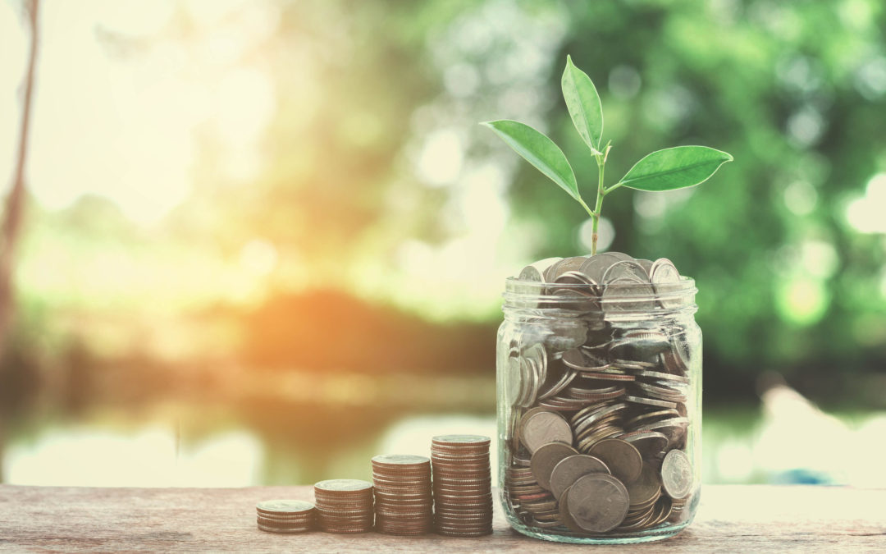

- HOME
- HAMIDA'S LABS
- ADRIANNA'S LABS
- HAMIDA'S PROJECTS
- ADRIANNA'S PROJECTS
- HAMIDA'S BIOGRAPHY
- ADRIANNA'S BIOGRAPHY
- TECHTEACH
- BLOG
Present
My name is Adrianna Singh. I am currently a sophmore at Thomas Edison Career and Technical Education High School. Right now I am focused on making the most of the time I have to still be a kid because soon, when high school ends, I will have more responsibilites that will take over a lot of my time. For the time being I am trying my best to apply myself in school and eventually plan to participate in other extracurricular activities such as clubs or maybe even sports before I graduate. I also try my best to make time to go out and experience different things and places.
Future
A lot of what I am doing now is to prepare myself for my future. I would like to graduate high school and then get into and graduate college. I'm working on being able to get a driver's license and a job as well. I feel that by preparing for these things I can prepare more for adulthood and the responsibilities that comes with it. I would like to find enough stability in my life where I can be available to get a pet, travel, start a family and find balance emotionally and financially.


|

|

|
 |